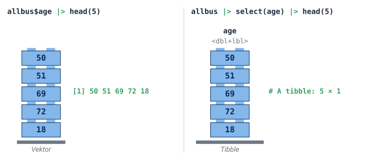
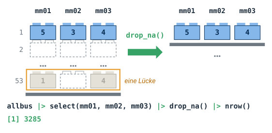

4 Datenimport und Inspektion
Wer trägt islamfeindliche Einstellungen in Deutschland 2023?
Bevor du diese Frage beantworten kannst, brauchst du den Datensatz auf deinem Rechner — und du musst ihn so weit verstehen, dass du gezielt die richtigen Variablen herausziehen kannst. Dieses Kapitel begleitet dich vom Einlesen der SPSS-Datei über die ersten Inspektionsschritte bis zur sauberen Behandlung fehlender Werte. In Kapitel 5 baust du dann auf diesem Fundament die zwei Skalen der Mini-Studie auf.
Forschungsjournal: Wo stehst du in deiner Mini-Studie? Werkzeug steht (Kap. 1–3). Jetzt beginnt die eigentliche Forschungsarbeit. Mit diesem Kapitel hältst du am Ende einen Analyse-Datensatz in der Hand: 5.246 Befragte, dein eigenes Variablenset, fehlende Werte deklariert. Das ist der Rohzustand, von dem aus alle weiteren Etappen aufbauen.
4.1 Worum es geht
Stell dir vor, du bekommst von einer Kollegin einen USB-Stick mit der Aufschrift „ALLBUS 2023 — viel Spaß”. Du steckst ihn ein und öffnest die Datei. Was du siehst, ist nicht das, was du dir erhofft hast: 579 Spalten mit Namen wie mm01, pa29, pt06, wghtpew. Negative Zahlen tauchen als „Wert” auf — -8, -9, -11, -42 und ein gutes Dutzend weitere. Manche Variablen sind als Zahl gespeichert, obwohl sie eigentlich eine Kategorie sind (sex = 1 heißt „Mann”). Und die wirklichen Beschriftungen — das, was tatsächlich gefragt wurde — liegen irgendwo versteckt, unsichtbar im Hintergrund.
Genau dieser Zustand ist normal. Sekundärdatensätze aus der quantitativen Sozialforschung sehen immer so aus. Sie sind so gebaut, dass viele Menschen sie für viele unterschiedliche Fragen nutzen können — und das geht nur, wenn die Daten zunächst roh bleiben. Deine Aufgabe ist es, aus diesem Rohzustand einen Analyse-Datensatz zu machen, der zu deiner Forschungsfrage passt.
Diese Schritte sind keine Vorarbeit, die man möglichst schnell hinter sich bringt. Sie sind der methodische Kern jeder ehrlichen Auswertung: Welche Fälle nimmst du raus? Wie behandelst du fehlende Werte? Wie übersetzt du mm01 = 7 in „diese Person lehnt Muslime stark ab”? Jede dieser Entscheidungen beeinflusst, was am Ende rauskommt — und jede gehört in eine Pipeline, die du jederzeit reproduzieren kannst. Das ist offene Wissenschaft im konkreten Handwerk.
Dieses Kapitel ist der Anker für alles, was folgt. Du legst hier den Analyse-Datensatz an, mit dem du in Kapitel 7 Verteilungen beschreibst, in Kapitel 8 Strukturen prüfst und in Kapitel 9 Hypothesen modellierst. Wenn dieser Anker hält, halten alle späteren Befunde.
Was du nach diesem Kapitel kannst
- Einen SPSS-Datensatz mit
read_spss()einlesen — inklusive aller Variablen- und Wertelabels. - Variablen über Name oder Label mit
find_var()suchen. - Detail-Codebooks für ausgewählte Variablen mit
codebook()erzeugen. - Variablen und Fälle gezielt auswählen, filtern, sortieren und umsortieren (
select(),filter(),arrange(),relocate()). - Den
<haven_labelled>-Datentyp verstehen und ihn bei Bedarf in Faktor oder numerisch konvertieren. - Variablenlabels und Wertelabels lesen, auslesen und setzen.
- Fehlende Werte deklarieren und mit
na_frequencies(),set_na()unddrop_na()systematisch behandeln.
4.2 Setup
In jeder R-Sitzung lädst du zuerst die Pakete, mit denen du arbeitest. In diesem Buch sind das durchgehend nur zwei:
SPSS → R. In SPSS bist du gewohnt, dass alle Funktionen direkt verfügbar sind. In R aktivierst du dir mit library() gezielt die Werkzeuge, die du brauchst — das hält den Funktions-Namensraum übersichtlich und macht jeden Schritt nachvollziehbar.
4.3 Datensatz einlesen mit read_spss()
Der ALLBUS 2023 liegt als SPSS-Datei (ALLBUS2023.sav) im Projektordner. Mit read_spss() aus mariposa liest du sie ein:
allbus <- read_spss("ALLBUS2023.sav")allbus ist jetzt ein Tibble — ein moderner Datentyp im tidyverse. Tibbles verhalten sich wie klassische Data Frames, drucken aber kompakter und behalten ihre Spaltentypen besser. Was wir geladen haben:
allbus# A tibble: 5,246 × 579
za_nr doi version respid substudy mode splt23_1 splt23_2
<dbl+lbl> <chr> <chr> <dbl> <dbl+lbl> <dbl+l> <dbl+lbl> <dbl+lbl>
1 8831 [ALLBUSc… http… v1.3.0… 1 NA(a) [TNZ… 2 [CAP… NA(a) [TNZ… 2 [SPL…
2 8831 [ALLBUSc… http… v1.3.0… 2 1 [SIM… 3 [CAW… 1 [SPL… -15 [TNZ…
3 8831 [ALLBUSc… http… v1.3.0… 3 1 [SIM… 4 [MAI… 1 [SPL… -15 [TNZ…
4 8831 [ALLBUSc… http… v1.3.0… 4 1 [SIM… 4 [MAI… 1 [SPL… -15 [TNZ…
5 8831 [ALLBUSc… http… v1.3.0… 5 2 [SEQ… 3 [CAW… 2 [SPL… -15 [TNZ…
6 8831 [ALLBUSc… http… v1.3.0… 6 NA(a) [TNZ… 2 [CAP… NA(a) [TNZ… 1 [SPL…
7 8831 [ALLBUSc… http… v1.3.0… 7 1 [SIM… 4 [MAI… 1 [SPL… -15 [TNZ…
8 8831 [ALLBUSc… http… v1.3.0… 8 1 [SIM… 3 [CAW… 1 [SPL… -15 [TNZ…
9 8831 [ALLBUSc… http… v1.3.0… 9 2 [SEQ… 3 [CAW… 2 [SPL… -15 [TNZ…
10 8831 [ALLBUSc… http… v1.3.0… 10 NA(a) [TNZ… 2 [CAP… NA(a) [TNZ… 2 [SPL…
# ℹ 5,236 more rows
# ℹ 571 more variables: eastwest <dbl+lbl>, german <dbl+lbl>, ep01 <dbl+lbl>,
# ep03 <dbl+lbl>, ep04 <dbl+lbl>, ep06 <dbl+lbl>, xr19 <dbl+lbl>,
# xr20 <dbl+lbl>, lm27 <dbl+lbl>, lm28 <dbl+lbl>, lm29 <dbl+lbl>,
# lm30 <dbl+lbl>, lm31 <dbl+lbl>, lm32 <dbl+lbl>, lm33 <dbl+lbl>,
# lm34 <dbl+lbl>, la01 <dbl+lbl>, li01 <dbl+lbl>, li02 <dbl+lbl>,
# li03 <dbl+lbl>, li04 <dbl+lbl>, li05 <dbl+lbl>, li09 <dbl+lbl>, …Im Kopf siehst du 5,246 × 579 — der Datensatz hat 5.246 Fälle und 579 Variablen. Darunter eine Auswahl der ersten Spalten mit ihren Datentypen.
Abbildung 4.1 zeigt den Weg von der Datei zum Objekt: read_spss() liest ALLBUS2023.sav aus dem Projektordner und legt das Ergebnis unter dem Namen allbus ab. Ab jetzt arbeitest du mit diesem Objekt in R; die Datei auf der Festplatte bleibt unverändert.

read_spss() liest die SPSS-Datei ein und legt das Ergebnis als Objekt allbus ab.
Was bedeuten die kleinen Typ-Marker unter jeder Spalte? Direkt unter dem Spaltennamen druckt das Tibble einen Typ-Tag in spitzen Klammern. Hier dein Mini-Glossar:
| Tag | Bedeutung | Beispiel |
|---|---|---|
<int> |
ganze Zahl (integer) | Fall-ID, Anzahl |
<dbl> |
Dezimalzahl (double) | Alter, Skalenmittelwert |
<chr> |
Text (character) | Variable mit Wortlauten |
<fct> |
Faktor (Kategorie mit Levels) | rekodierte Bildungsstufen |
<dbl+lbl> |
labelled-double aus SPSS | typische ALLBUS-Variable |
<lgl> |
logisch (TRUE/FALSE) |
aus einer Bedingung |
Den letzten Typ — <dbl+lbl> — wirst du im ALLBUS überall sehen. Wie er funktioniert und warum er anders ist als ein normaler Faktor, erklärt der folgende Abschnitt.
Konzept: Was ist <haven_labelled>? Wenn du Daten aus SPSS einliest, kommen die meisten Variablen als <haven_labelled>-Spalten an — gedruckt als <dbl+lbl>. Das ist kein Faktor, sondern eine Zahl mit angeheftetem Bedeutungs-Schichten-Paket: Die Werte bleiben numerisch (du kannst weiterrechnen), aber im Hintergrund tragen sie ihre SPSS-Wertelabels mit — „1 = MANN, 2 = FRAU, …“. Konkret:
allbus$sex |> head(5)<labelled<double>[5]>: GESCHLECHT, BEFRAGTE(R)
[1] 1 1 2 1 2
Labels:
value label
1 MANN
2 FRAU
3 DIVERS
NA(a) DATENFEHLER: MFN
NA(b) KEINE ANGABEOben stehen das Variablenlabel und die ersten fünf Werte, darunter die Label-Tabelle. Die Zeilen NA(a) und NA(b) sind die Missing-Codes der Variable. Mehr dazu in Kapitel 4.8.
Drei Operationen sind häufig:
-
Mit der Variable rechnen (
mean(allbus$sex, na.rm = TRUE)) → funktioniert direkt, gibt aber meist unsinnige Werte für kategoriale Variablen. -
Lesbar machen für Plots (
allbus |> to_label(sex)) → wandelt in einen Faktor mit den Labels als Levels. -
Reine Zahl behalten (
allbus |> to_numeric(sex)) → entfernt die Label-Schicht.
Weiter unten in Kapitel 4.6 kommen die Details.
Hintergrund: Was passiert beim Einlesen? read_spss() aus mariposa verwendet im Hintergrund das Paket haven und reichert die Daten mit zwei Eigenschaften an, die du aus SPSS kennst: Variablenlabels (eine ausführliche Beschriftung pro Spalte) und Wertelabels (eine Beschriftung pro Ausprägung). Beide Informationen bleiben unsichtbar in den Spalten gespeichert — du kannst sie jederzeit abrufen oder als Faktor sichtbar machen.
4.3.1 Andere Formate und Export mit read_stata(), read_xlsx() und write_spss()
Falls du Daten in anderen Formaten brauchst, gibt es passende Geschwister-Funktionen:
read_stata("datei.dta") # Stata
read_sas("datei.sas7bdat") # SAS
read_xlsx("datei.xlsx") # ExcelUnd wenn du einen bearbeiteten Datensatz zurück nach SPSS exportieren möchtest:
write_spss(allbus, "allbus_bearbeitet.sav")
4.4 Erster Blick auf den Datensatz mit glimpse(), nrow() und ncol()
Bei knapp 600 Variablen ist es unmöglich, sich alles in der Konsole anzeigen zu lassen. Drei Werkzeuge helfen dir bei der Orientierung:
nrow() gibt 5246 zurück, ncol() 579. allbus ist also eine Bauplatte mit 5.246 Reihen und 579 Türmen (Abbildung 4.2): Jede Reihe ist eine befragte Person, jeder Turm eine Variable. Ein leerer Stein heißt, dass für diese Person bei dieser Variable kein gültiger Wert vorliegt.

allbus: die ersten fünf Reihen der Variablen respid, age und mm01. Bei mm01 fehlt in drei Reihen der Wert.
4.4.1 Variablen finden mit find_var()
Die Variablennamen im ALLBUS sind kryptisch (mm01, pa29, wghtpew). Was wirklich gemessen wird, steht im Variablenlabel. mariposas find_var() durchsucht beide gleichzeitig — Name und Label — und liefert dir die Treffer als kleine Übersichtstabelle:
allbus |> find_var("muslim") col name label
1 194 mm03 ANWESENHEIT VON MUSLIMEN BRINGT KONFLIKT
2 196 mm05 MUSLIMISCHER BUERGERMEISTER IN ORDNUNG
3 197 mm06 UNTER MUSLIMEN SIND VIELE REL. FANATIKERDie Ergebnistabelle zeigt pro Treffer die Position der Variable im Datensatz (col), ihren Namen und das vollständige Label; Groß- und Kleinschreibung spielen bei der Suche keine Rolle. Drei Treffer — mm03, mm05, mm06. Die anderen drei Items unserer Skala sprechen vom „Islam” statt von „Muslimen”. Weil das Suchmuster ein regulärer Ausdruck ist, fragst du beide Begriffe auf einmal ab — | heißt „oder”:
allbus |> find_var("islam|muslim") col name label
1 169 ma08 AN SCHULEN AUCH ISLAMUNTERRICHT ERLAUBEN
2 192 mm01 ISLAMAUSUEBUNG IN DEUTSCHL. BESCHRAENKEN
3 193 mm02 ISLAM PASST IN DIE DEUTSCHE GESELLSCHAFT
4 194 mm03 ANWESENHEIT VON MUSLIMEN BRINGT KONFLIKT
5 195 mm04 STAAT SOLLTE ISLAM. GRUPPEN BEOBACHTEN
6 196 mm05 MUSLIMISCHER BUERGERMEISTER IN ORDNUNG
7 197 mm06 UNTER MUSLIMEN SIND VIELE REL. FANATIKERJetzt sind alle sechs mm-Items für unsere Islamfeindlichkeits-Skala beisammen (plus ma08, ein Item zum Islamunterricht aus einem anderen Fragenblock). Suchst du dagegen buchstäblich nach Zeichen, die in regulären Ausdrücken eine Sonderbedeutung haben (etwa den Punkt in ISLAM.), setzt du fixed = TRUE. Standardmäßig wird in Namen und Labels gesucht; mit search = "label" schränkst du auf Labels ein, mit search = "name" auf Namen:
allbus |> find_var("alter", search = "label") col name label
1 93 age ALTER: BEFRAGTE(R)
2 94 agec ALTER: BEFRAGTE(R), KATEGORISIERT
3 265 is01 PERSOENLICH.ALTERSSICHERUNG AUSREICHEND?
4 311 dw12a BEFR.: ALTER BEI AUFGABE DES BERUFS
5 333 scage GEGENWAERTIGER EHEPARTNER: ALTER
6 334 scagec GEGENWAERTIGER EHEPARTNER: ALTER, KAT.
7 367 page LEBENSPARTNER: ALTER
8 368 pagec LEBENSPARTNER: ALTER, KAT.
9 434 hh2age 2.HAUSH.PERSON: ALTER
10 439 hh3age 3.HAUSH.PERSON: ALTER
11 444 hh4age 4.HAUSH.PERSON: ALTER
12 449 hh5age 5.HAUSH.PERSON: ALTER
13 454 hh6age 6.HAUSH.PERSON: ALTER
14 459 hh7age 7.HAUSH.PERSON: ALTER
15 464 hh8age 8.HAUSH.PERSON: ALTER
16 471 dh17 ALTER JUENGSTES HAUSHALTSMITGLIED
17 480 kh1age ALTER, 1.KIND, AUSSER HAUS
18 483 kh2age ALTER, 2.KIND, AUSSER HAUS
19 486 kh3age ALTER, 3.KIND, AUSSER HAUS
20 489 kh4age ALTER, 4.KIND, AUSSER HAUS
21 492 kh5age ALTER, 5.KIND, AUSSER HAUS
22 495 kh6age ALTER, 6.KIND, AUSSER HAUS
23 498 kh7age ALTER, 7.KIND, AUSSER HAUS
24 501 kh8age ALTER, 8.KIND, AUSSER HAUS
25 504 kh9age ALTER, 9.KIND, AUSSER HAUS
26 507 kh10age ALTER, 10.KIND, AUSSER HAUS
27 573 xi03 INTERVIEWER(IN): ALTERallbus |> find_var("^mm", search = "name") # regex: alle mm-Items col name label
1 170 mm07 FUER DEN BAU VON MOSCHEEN IN BRD?
2 192 mm01 ISLAMAUSUEBUNG IN DEUTSCHL. BESCHRAENKEN
3 193 mm02 ISLAM PASST IN DIE DEUTSCHE GESELLSCHAFT
4 194 mm03 ANWESENHEIT VON MUSLIMEN BRINGT KONFLIKT
5 195 mm04 STAAT SOLLTE ISLAM. GRUPPEN BEOBACHTEN
6 196 mm05 MUSLIMISCHER BUERGERMEISTER IN ORDNUNG
7 197 mm06 UNTER MUSLIMEN SIND VIELE REL. FANATIKERSPSS → R. In SPSS kennst du DISPLAY DICTIONARY für eine Gesamtübersicht. find_var() ist gezielter: du suchst nach einem inhaltlichen Stichwort und bekommst sofort die passenden Variablen — selbst wenn du die kryptischen Namen nicht im Kopf hast.
4.4.2 Detail-Übersicht mit codebook()
Für eine bestimmte Auswahl von Variablen liefert codebook() aus mariposa eine schöne HTML-Übersicht mit Labels, Ausprägungen und Häufigkeiten. Das ist das R-Äquivalent zum SPSS-DISPLAY DICTIONARY:
allbus |>
codebook(mm01, mm02, mm03, mm04, mm05, mm06)5246 observations | 6 variables | 6 labelled | 6 with missing data
| ID | Name | Type | Label | Values | Value Labels | Freq. |
|---|---|---|---|---|---|---|
| 192 | mm01 | lbl+dbl | ISLAMAUSUEBUNG IN DEUTSCHL. BESCHRAENKEN |
1
2
3
4
5
6
7
-42
-11
-9
-8
|
STIMME GAR NICHT ZU
..
..
..
..
..
STIMME VOLL+GANZ ZU
DATENFEHLER: MFN
TNZ: SPLIT
KEINE ANGABE
WEISS NICHT
|
1022
457
295
529
319
236
543
2
1647
73
123
|
| 193 | mm02 | lbl+dbl | ISLAM PASST IN DIE DEUTSCHE GESELLSCHAFT |
1
2
3
4
5
6
7
-42
-11
-9
-8
|
STIMME GAR NICHT ZU
..
..
..
..
..
STIMME VOLL+GANZ ZU
DATENFEHLER: MFN
TNZ: SPLIT
KEINE ANGABE
WEISS NICHT
|
954
515
494
629
350
235
227
2
1647
72
121
|
| 194 | mm03 | lbl+dbl | ANWESENHEIT VON MUSLIMEN BRINGT KONFLIKT |
1
2
3
4
5
6
7
-42
-11
-9
-8
|
STIMME GAR NICHT ZU
..
..
..
..
..
STIMME VOLL+GANZ ZU
DATENFEHLER: MFN
TNZ: SPLIT
KEINE ANGABE
WEISS NICHT
|
381
434
391
700
574
411
552
2
1647
60
94
|
| 195 | mm04 | lbl+dbl | STAAT SOLLTE ISLAM. GRUPPEN BEOBACHTEN |
1
2
3
4
5
6
7
-42
-11
-9
-8
|
STIMME GAR NICHT ZU
..
..
..
..
..
STIMME VOLL+GANZ ZU
DATENFEHLER: MFN
TNZ: SPLIT
KEINE ANGABE
WEISS NICHT
|
533
473
338
596
437
397
650
4
1647
64
107
|
| 196 | mm05 | lbl+dbl | MUSLIMISCHER BUERGERMEISTER IN ORDNUNG |
1
2
3
4
5
6
7
-11
-9
-8
|
STIMME GAR NICHT ZU
..
..
..
..
..
STIMME VOLL+GANZ ZU
TNZ: SPLIT
KEINE ANGABE
WEISS NICHT
|
819
271
221
453
334
443
868
1647
72
118
|
| 197 | mm06 | lbl+dbl | UNTER MUSLIMEN SIND VIELE REL. FANATIKER |
1
2
3
4
5
6
7
-11
-9
-8
|
STIMME GAR NICHT ZU
..
..
..
..
..
STIMME VOLL+GANZ ZU
TNZ: SPLIT
KEINE ANGABE
WEISS NICHT
|
328
509
369
561
475
381
686
1647
102
188
|
In RStudio öffnet sich die Übersicht im Viewer-Reiter; in einem Quarto-Dokument wie diesem Buch bettet mariposa sie direkt in den Bericht ein. Willst du sie weitergeben, speicherst du sie mit codebook(..., file = "codebook.html") als eigene HTML-Datei oder mit write_xlsx(codebook(...), "codebook.xlsx") als Excel-Tabelle.
SPSS → R: Dateninspektion. | SPSS | R | | ——————————- | ——————————– | | FREQUENCIES VARIABLES=mm01. | allbus \|> frequency(mm01) | | DESCRIPTIVES VARIABLES=age. | allbus \|> describe(age) | | DISPLAY DICTIONARY. | allbus \|> codebook(...) |
Reviewer-Hinweis. In einer Methodenbeschreibung gehört zu jeder Skala ein Mini-Codebook: Wortlaut der Items, Antwortformat, Missing-Behandlung, N pro Item. Wer das in codebook() als Tabelle generiert und in den Anhang seines Berichts schreibt, hat den Forschungsstandard erfüllt.
4.5 Variablen und Fälle auswählen
Die dplyr-Funktionen select(), filter() und arrange() sind dein tägliches Werkzeug, um aus einem großen Datensatz das herauszuholen, was du gerade brauchst.
4.5.1 Variablen auswählen mit select()
allbus |>
select(mm01, mm02, mm03)# A tibble: 5,246 × 3
mm01 mm02 mm03
<dbl+lbl> <dbl+lbl> <dbl+lbl>
1 5 [..] 3 [..] 4 [..]
2 NA(b) [TNZ: SPLIT] NA(b) [TNZ: SPLIT] NA(b) [TNZ: SPLIT]
3 NA(b) [TNZ: SPLIT] NA(b) [TNZ: SPLIT] NA(b) [TNZ: SPLIT]
4 NA(b) [TNZ: SPLIT] NA(b) [TNZ: SPLIT] NA(b) [TNZ: SPLIT]
5 2 [..] 4 [..] 4 [..]
6 3 [..] 3 [..] 3 [..]
7 NA(b) [TNZ: SPLIT] NA(b) [TNZ: SPLIT] NA(b) [TNZ: SPLIT]
8 NA(b) [TNZ: SPLIT] NA(b) [TNZ: SPLIT] NA(b) [TNZ: SPLIT]
9 1 [STIMME GAR NICHT ZU] 6 [..] 2 [..]
10 7 [STIMME VOLL+GANZ ZU] 1 [STIMME GAR NICHT ZU] 3 [..]
# ℹ 5,236 more rowsselect() behält nur die Türme, die du nennst; alle 5.246 Reihen bleiben auf der Platte (Abbildung 4.3).

select(mm01, mm02, mm03) behält drei Türme. Grau sind die Türme, die wegfallen; die Zahl der Reihen bleibt 5.246.
Du kannst Bereiche mit : angeben und Variablen mit - ausschließen:
allbus |>
select(mm01:mm06, eastwest, sex, age, educ)# A tibble: 5,246 × 10
mm01 mm02 mm03 mm04 mm05 mm06
<dbl+lbl> <dbl+lbl> <dbl+lbl> <dbl+lbl> <dbl+lbl> <dbl+lbl>
1 5 [..] 3 [..] 4 [..] 2 [..] 6 [..] 2 [..]
2 NA(b) [TNZ: SPLI… NA(b) [TNZ… NA(b) [TNZ… NA(b) [TNZ… NA(a) [TNZ… NA(a) [TNZ…
3 NA(b) [TNZ: SPLI… NA(b) [TNZ… NA(b) [TNZ… NA(b) [TNZ… NA(a) [TNZ… NA(a) [TNZ…
4 NA(b) [TNZ: SPLI… NA(b) [TNZ… NA(b) [TNZ… NA(b) [TNZ… NA(a) [TNZ… NA(a) [TNZ…
5 2 [..] 4 [..] 4 [..] 3 [..] 3 [..] 6 [..]
6 3 [..] 3 [..] 3 [..] 7 [STI… 6 [..] 3 [..]
7 NA(b) [TNZ: SPLI… NA(b) [TNZ… NA(b) [TNZ… NA(b) [TNZ… NA(a) [TNZ… NA(a) [TNZ…
8 NA(b) [TNZ: SPLI… NA(b) [TNZ… NA(b) [TNZ… NA(b) [TNZ… NA(a) [TNZ… NA(a) [TNZ…
9 1 [STIMME GA… 6 [..] 2 [..] 1 [STI… 7 [STI… 2 [..]
10 7 [STIMME VO… 1 [STI… 3 [..] 6 [..] 1 [STI… 7 [STI…
# ℹ 5,236 more rows
# ℹ 4 more variables: eastwest <dbl+lbl>, sex <dbl+lbl>, age <dbl+lbl>,
# educ <dbl+lbl>Diese Auswahl — die sechs Skalen-Items plus Demografie — ist genau das, was du für die Mini-Studie brauchst.
In Kapitel 3.5 hast du eine einzelne Spalte mit $ herausgeholt. Das geht auch mit select(), aber du bekommst ein anderes Objekt zurück:
allbus$age |> head(5)<labelled<double>[5]>: ALTER: BEFRAGTE(R)
[1] 50 51 69 72 18
Labels:
value label
NA(a) NICHT GENERIERBAR# A tibble: 5 × 1
age
<dbl+lbl>
1 50
2 51
3 69
4 72
5 18 allbus$age gibt einen Vektor zurück: die fünf Zahlen hinter [1], darunter die Label-Tabelle. allbus |> select(age) gibt ein Tibble mit einer Spalte zurück. Links zeigt Abbildung 4.4 einen einzelnen Turm, rechts eine Bauplatte mit einem Turm. Welche Form du brauchst, hängt von der nächsten Funktion ab: Rechenfunktionen wie mean() erwarten einen Vektor, dplyr-Funktionen wie filter() einen Datensatz.
![ head(5), darunter ein Turm aus fünf blauen Steinen 50, 51, 69, 72 und 18 auf einem kurzen Sockel, beschriftet Vektor, daneben die Ausgabe [1] 50 51 69 72 18. Rechts der Code allbus |> select(age) |> head(5), darunter die Maße 5 × 1 und derselbe Turm mit dem Spaltenkopf age und dem Typ dbl+lbl auf einer breiten Bauplatte mit Platz für weitere Türme, beschriftet Tibble.">](Bilder/figuren/k04-dollar-select.svg){kind=link}
$ die Werte von age als Vektor zurück, rechts gibt select() ein Tibble mit der Spalte age zurück. Beide enthalten dieselben fünf Werte.
Kurz überlegen. Was gibt allbus |> select(age) |> mean(na.rm = TRUE) zurück?
Warning in mean.default(select(allbus, age), na.rm = TRUE): Argument ist weder
numerisch noch boolesch: gebe NA zurück[1] NAmean(allbus$age, na.rm = TRUE)[1] 52.51063mean() bekommt im ersten Aufruf eine Bauplatte statt eines Turms. Damit kann es nicht rechnen: R gibt eine Warnung aus und als Ergebnis NA. Im zweiten Aufruf bekommt mean() mit allbus$age den Turm und berechnet das Durchschnittsalter, rund 52.5 Jahre. In einer Pipe holst du den Turm mit pull(age) heraus.
4.5.1.1 Tidyselect-Helfer wie starts_with(), where() und everything()
Bei großen Datensätzen wie ALLBUS willst du oft alle Variablen, die ein Muster erfüllen auswählen. Statt sie einzeln aufzuzählen, helfen dir die folgenden Funktionen:
| Helfer | Wirkung | Beispiel auf ALLBUS |
|---|---|---|
starts_with("pre") |
alle Variablen, deren Name mit pre beginnt |
select(starts_with("mm0")) |
ends_with("suffix") |
alle, deren Name auf suffix endet |
select(ends_with("educ")): Schulabschluss von Befragten, Partner:in und Eltern |
contains("teil") |
alle, deren Name teil enthält |
select(contains("wght")): die vier Gewichtungsvariablen |
matches("regex") |
alle, die zum regulären Ausdruck passen | select(matches("^p[at]")) |
where(is.numeric) |
alle, deren Inhalt eine Bedingung erfüllt | select(where(is.numeric)) |
everything() |
alle übrigen — typisch in relocate()
|
relocate(respid, .before = everything()) |
Diese Helfer funktionieren genauso in mutate(across(...)), summarise(across(...)) und in vielen mariposa-Aufrufen — ein tidyverse-weites Vokabular.
4.5.1.2 Spalten herausziehen und umsortieren mit pull() und relocate()
Zwei nahe Verwandte von select():
-
pull(var)zieht eine einzelne Spalte als reinen Vektor heraus — nützlich, wenn du den Spalteninhalt direkt in eine Funktion füttern willst, die kein Tibble erwartet:allbus |> pull(age) |> mean(na.rm = TRUE). -
relocate(var, .before = X, .after = Y)sortiert Spalten um, ohne welche zu entfernen — praktisch, wenn die wichtigsten Variablen vorne stehen sollen:allbus |> relocate(mm01:mm06, eastwest, sex, age, educ, .before = everything()).
4.5.2 Fälle filtern mit filter()
# A tibble: 2,672 × 3
sex age educ
<dbl+lbl> <dbl+lbl> <dbl+lbl>
1 2 [FRAU] 69 4 [FACHHOCHSCHULREIFE]
2 2 [FRAU] 18 5 [HOCHSCHULREIFE]
3 2 [FRAU] 45 5 [HOCHSCHULREIFE]
4 2 [FRAU] 26 3 [MITTLERE REIFE]
5 2 [FRAU] 71 2 [VOLKS-,HAUPTSCHULE]
6 2 [FRAU] 66 2 [VOLKS-,HAUPTSCHULE]
7 2 [FRAU] 39 3 [MITTLERE REIFE]
8 2 [FRAU] 51 3 [MITTLERE REIFE]
9 2 [FRAU] 29 5 [HOCHSCHULREIFE]
10 2 [FRAU] 60 4 [FACHHOCHSCHULREIFE]
# ℹ 2,662 more rowsfilter() prüft die Bedingung sex == 2 für jede Reihe und behält nur die Reihen, in denen sie zutrifft. Der Code 2 steht für FRAU; übrig bleiben 2.672 Befragte (Abbildung 4.5). Danach wählt select() die drei Spalten aus.
![Links die Bauplatte allbus, 5,246 × 579, mit den Türmen sex, age und educ und Auslassungspunkten für weitere Türme; gezeigt sind die ersten sechs Reihen. Die Steine von sex tragen Aufkleber: 1 MANN, 1 MANN, 2 FRAU, 1 MANN, 2 FRAU, 2 FRAU. Die drei MANN-Reihen mit dem Alter 50, 51 und 72 sind grau. Ein grüner Pfeil mit sex == 2 führt zu einer neuen Bauplatte, 2,672 × 3, mit den drei FRAU-Reihen: Alter 69, 18 und 45, educ 4, 5 und 5, darunter Auslassungspunkte. Darunter der Code allbus |> filter(sex == 2) |> select(sex, age, educ).](Bilder/figuren/k04-filter.svg)
filter(sex == 2) behält nur die Reihen mit dem Code 2 (FRAU). Grau sind die Reihen, die wegfallen; gezeigt sind die ersten sechs Reihen.
Die Vergleichs- und Logik-Operatoren aus Kapitel 3.4 (==, !=, <, >, &, |, %in%) bilden hier dein Vokabular. Komplexere Filter kombinierst du frei:
[1] 825Vorsicht: Fehlende Werte. filter() schließt Fälle mit NA in der Bedingung automatisch aus. Das ist meist gewünscht, kann dich aber überraschen. Drei Varianten im Vergleich:
sex == 1 vergleicht jede Reihe einzeln (Abbildung 4.6). In Reihe 110 fehlt sex (KEINE ANGABE). Ob dieser Wert 1 ist, kann R nicht sagen, und der Vergleich ergibt wieder NA. filter() behält nur die Reihen mit TRUE, die Reihe 110 fällt also weg wie die Reihe mit FALSE. is.na(sex) fragt nur, ob der Wert fehlt, und ergibt immer TRUE oder FALSE.

filter(sex == 1) behält nur die Reihen, in denen der Vergleich TRUE ergibt. Wo sex fehlt, ist auch das Ergebnis des Vergleichs ein leerer Stein, und die Reihe fällt weg.
Wenn du dich wunderst, warum deine Fallzahl plötzlich kleiner ist als erwartet — die NA-Filterung ist meist der Grund.
Kurz überlegen. allbus |> filter(sex == 1) behält 2.546 Reihen, filter(sex == 2) 2.672 (Abbildung 4.5). Zusammen sind das 5.218, allbus hat aber 5.246 Reihen. Wo sind die übrigen 28?
allbus |> frequency(sex)
Frequency Analysis Results
--------------------------
sex (GESCHLECHT, BEFRAGTE(R))
# total N=5246 valid N=5236 mean=1.52 sd=0.51 skewness=0.01
+-------+------------------+------+--------+---------+--------+
| Value | Label | N | Raw % | Valid % | Cum. % |
+-------+------------------+------+--------+---------+--------+
| 1 | MANN | 2546 | 48.53 | 48.62 | 48.62 |
| 2 | FRAU | 2672 | 50.93 | 51.03 | 99.66 |
| 3 | DIVERS | 18 | 0.34 | 0.34 | 100.00 |
+-------+------------------+------+--------+---------+--------+
| Total valid | 5236 | 99.81 | 100.00 | |
+-------+------------------+------+--------+---------+--------+
| -42 | DATENFEHLER: MFN | 1 | 0.02 | | |
| -9 | KEINE ANGABE | 9 | 0.17 | | |
+-------+------------------+------+--------+---------+--------+
| Total missing | 10 | 0.19 | | |
+-------+------------------+------+--------+---------+--------+
| Total | 5246 | 100.00 | | |
+-------+------------------+------+--------+---------+--------+18 Befragte haben bei sex den Code 3 (DIVERS); sie erfasst weder sex == 1 noch sex == 2. Bei den übrigen 10 fehlt der Wert (9-mal KEINE ANGABE, einmal DATENFEHLER: MFN), und diese Reihen fallen bei jedem Vergleich mit == weg. Mit filter(is.na(sex)) bekommst du genau diese 10 Reihen.
4.5.3 Fälle sortieren mit arrange() und desc()
# A tibble: 5 × 2
age educ
<dbl+lbl> <dbl+lbl>
1 18 5 [HOCHSCHULREIFE]
2 18 5 [HOCHSCHULREIFE]
3 18 3 [MITTLERE REIFE]
4 18 1 [OHNE ABSCHLUSS]
5 18 2 [VOLKS-,HAUPTSCHULE]Absteigend mit desc():
4.6 Datentypen verstehen mit class()
Wenn du in SPSS arbeitest, fragst du dich selten, welcher Typ eine Variable ist. SPSS macht das im Hintergrund: eine Variable ist „numerisch” oder „string”, und Wertelabels („1 = Mann, 2 = Frau”) sind nur eine Beschriftungs-Schicht obendrauf. In R ist das ein bisschen anders — und am Anfang verwirrend.
R kennt eine ganze Reihe von Datentypen: reine Zahlen (numeric), Text (character), Logik (logical), Kategorien mit fester Reihenfolge (factor). Beim Einlesen eines SPSS-Datensatzes kommt noch ein vierter Typ hinzu, den mariposa von haven übernimmt: <haven_labelled>. Das ist eine Art Hybrid: Die Spalte verhält sich nach außen wie eine Zahl, aber im Hintergrund tragen die Werte ihre SPSS-Wertelabels mit. So bleibt die Information „1 bedeutet Mann” erhalten, ohne dass du sie aus dem Codebook nachschlagen musst.
Mit class() siehst du den Typ einer Variable:
class(allbus$sex)[1] "haven_labelled" "vctrs_vctr" "double" class(allbus$age)[1] "haven_labelled" "vctrs_vctr" "double" Beide Variablen sind double, also Zahlen, und zugleich haven_labelled. Ein Wert von sex ist damit ein Stein mit Aufkleber, etwa die Zahl 1 mit dem Wertelabel MANN (Abbildung 4.7). Im Tibble steht dafür der Typ-Tag <dbl+lbl>. Bei age trägt nur der Missing-Code ein Label; auch das reicht, damit die Variable labelled ist.

sex: die Zahl 1 mit dem Aufkleber MANN. dbl steht für die Zahl (double), lbl für das Wertelabel (haven_labelled).
4.6.1 Labelled-Variablen umwandeln mit to_label(), to_numeric() und unlabel()
Drei Konvertierungen wirst du immer wieder brauchen:
| Funktion | Wirkung |
|---|---|
to_label(data, var) |
wandelt <haven_labelled> in einen Faktor mit den Wertelabels als Stufen — Standard, wenn du in ggplot()-Achsen lesbare Beschriftungen willst |
to_numeric(data, var) |
wandelt in einen reinen numerischen Vektor — Labels gehen verloren |
to_labelled(data, var, labels = ...) |
wandelt umgekehrt einen Faktor zurück in ein <haven_labelled>
|
# A tibble: 3 × 2
sex eastwest
<fct> <fct>
1 MANN ALTE BUNDESLAENDER
2 MANN ALTE BUNDESLAENDER
3 FRAU ALTE BUNDESLAENDERto_label() macht aus dem Aufkleber den Wert: Aus der 1 mit dem Label MANN wird die Faktorstufe MANN (Abbildung 4.8). to_numeric() zieht den Aufkleber ab, übrig bleibt die Zahl 1.

sex vor und nach der Umwandlung. to_label() ergibt einen Faktor mit den Labels als Werten, to_numeric() die Zahlen ohne Labels.
Wenn du nur Labels abstreifen willst (z. B. weil eine Funktion mit labelled-Vektoren nicht klarkommt), nimmst du unlabel(): allbus |> unlabel(sex, age). Selten gebraucht, aber gut zu wissen, wenn ein fremdes Paket sich quer stellt.
Hintergrund: Warum nicht einfach Faktor? In SPSS sind Variablen entweder numerisch oder string. Wertelabels sind ein Zusatz. In R gibt es Faktoren (Kategorien) und numerische Vektoren als getrennte Typen. <haven_labelled> ist eine Brücke: Du arbeitest mit Zahlen, aber die Wertelabels reisen mit. Wann du das auflösen solltest:
-
to_label()wenn du sortierst, gruppierst, kreuztabellierst oder plottest — Faktoren liefern lesbare Outputs. -
to_numeric()wenn du rechnest oder skalierst — z. B. bei Likert-Items, die du als pseudo-metrisch behandelst. - Beim Original lassen, wenn die Variable noch nicht final ist und du das Label später noch brauchst.
4.7 Variablen- und Wertelabels lesen und setzen mit var_label() und val_labels()
| Funktion | Wirkung |
|---|---|
var_label(data) |
Variablenlabels auslesen |
var_label(data$var) <- "Neue Beschriftung" |
Variablenlabel einer Spalte setzen |
var_label(data) <- list(var = "Neue Beschriftung") |
Variablenlabels mehrerer Spalten auf einmal setzen |
val_labels(data) |
Wertelabels auslesen |
data <- val_labels(data, var = c("value label 1" = 1, "value label 2" = 2)) |
Wertelabel setzen |
data <- val_labels(data, var = c("value label 1" = 1), .add = TRUE) |
Einzelne Wertelabels ändern oder ergänzen, die übrigen behalten |
drop_labels(data) |
Alle Wertelabels entfernen, deren Ausprägung in den Daten gar nicht vorkommt |
mm01
"ISLAMAUSUEBUNG IN DEUTSCHL. BESCHRAENKEN"
mm02
"ISLAM PASST IN DIE DEUTSCHE GESELLSCHAFT"
mm03
"ANWESENHEIT VON MUSLIMEN BRINGT KONFLIKT" Das Ergebnis ist ein benannter Character-Vektor — pro Variable das hinterlegte Label. So liest du, was eine kryptische Variable wie mm01 eigentlich bedeutet, ohne ins Codebook zu schauen.
Eine Variable wie mm01 trägt drei Beschriftungen (Abbildung 4.9): den Variablennamen, mit dem du in R arbeitest, das Variablenlabel, das var_label() ausliest, und die Wertelabels, die sagen, was eine Zahl bedeutet. Bei mm01 haben nur die Endpunkte 1 und 7 ein Wertelabel; für 2 bis 6 zeigt val_labels() nur ...

mm01: Variablenname, Variablenlabel und Wertelabels. Die Wertelabels kleben als Aufkleber an den Steinen.
Label nachträglich setzen. Wenn du eine neue Variable erzeugst (z. B. eine Skala in Kapitel 5), kannst du ihr ein sprechendes Label verpassen — Zukunft-Du dankt:
var_label(allbus$islamophobie) <- "Islamfeindlichkeits-Skala (6 Items, 1–7)"Dieses Label erscheint später automatisch in codebook(), in der Kopfzeile von frequency() und in vielen summary()-Ausgaben — überall, wo mariposa Beschriftungen sucht. Für mehrere Variablen auf einmal übergibst du eine Liste: var_label(allbus) <- list(islamophobie = "…", populismus = "…").
Wertelabels setzen. Für Wertelabels gibt es keinen Zuweisungspfeil auf die Spalte. val_labels() bekommt Paare aus Variable und benanntem Vektor ("Label" = Code) und gibt den geänderten Datensatz zurück, den du wieder abspeicherst. Typischer Fall: Ein selbst gebauter 0/1-Dummy wie islam_hoch in Kapitel 9 soll in frequency() und crosstab() lesbare Ausprägungen zeigen statt nackter Nullen und Einsen:
allbus <- val_labels(allbus, islam_hoch = c("niedrig" = 0, "hoch" = 1))Vorsicht: val_labels() ersetzt. Standardmäßig wirft val_labels() alle bisherigen Wertelabels der Variable weg. Bei einer frisch gebauten Variable ist das egal. Bei einer ALLBUS-Variable verschwinden damit aber auch die Labels der Missing-Codes: Nach val_labels(allbus, mm01 = c("stimme gar nicht zu" = 1, "stimme voll zu" = 7)) steht in frequency(mm01) vor -11 kein TNZ: SPLIT mehr. Willst du nur einzelne Labels ändern oder ergänzen, setzt du .add = TRUE. Dann bleiben alle übrigen Labels erhalten:
allbus <- val_labels(allbus, mm01 = c("stimme gar nicht zu" = 1, "stimme voll zu" = 7), .add = TRUE)Mit val_labels(allbus, mm01 = NULL) entfernst du die Wertelabels einer Variable komplett.
4.8 Fehlende Werte deklarieren mit na_frequencies(), set_na() und drop_na()
Fehlende Werte sind in der Sozialforschung Normalität, nicht Ausnahme. Niemand beantwortet jede Frage einer Umfrage — manche überspringen einzelne Punkte, manche wissen es schlicht nicht, manche bekommen wegen eines Split-Designs bestimmte Fragen gar nicht vorgelegt. Und manche Antworten waren ursprünglich da, gingen aber durch einen Datenfehler verloren.
Die GESIS unterscheidet in ALLBUS deshalb viele Arten von fehlenden Werten und kodiert sie mit klar unterscheidbaren negativen Zahlen. Im ALLBUS 2023 sind es 17 verschiedene Codes. Bei den sechs Items unserer Islamfeindlichkeits-Skala (mm01 bis mm06) kommen vier davon vor:
| Code | Bedeutung |
|---|---|
-42 |
DATENFEHLER: MFN (Mehrfachnennung) |
-11 |
TNZ: SPLIT (trifft nicht zu / Split-Modul) |
-9 |
KEINE ANGABE |
-8 |
WEISS NICHT |
Andere Variablen bringen weitere Codes mit, etwa -10 TNZ: FILTER (Frage nach einer Filterfrage übersprungen), -15 TNZ: MODE (im Befragungsmodus nicht gestellt), -7 VERWEIGERT, -32 NICHT GENERIERBAR (beim Alter age) oder -33 NICHT BESTIMMBAR und -41 DATENFEHLER (beim Schulabschluss educ). Welche Codes eine bestimmte Variable hat, zeigt dir na_frequencies() weiter unten.
Die Unterscheidung ist inhaltlich wichtig: ein „weiß nicht” ist methodisch etwas anderes als eine verweigerte Antwort, und ein „trifft nicht zu” (jemand hat die Frage gar nicht gestellt bekommen) ist wiederum etwas anderes als ein echter Datenfehler. Wenn du diese Codes als reguläre Zahlen behandelst — was passiert, wenn du sie einfach in einen Mittelwert wirfst — sind deine Ergebnisse Müll: ein „Durchschnittswert” von -3.4 für Lebenszufriedenheit ist offensichtlich Unsinn.
Beim Einlesen werden diese in SPSS als user-missing deklarierten Codes automatisch zu tagged NAs. „Tagged” heißt: sie zählen in Berechnungen als NA (also fehlend), behalten aber im Hintergrund die Information, welcher Missing-Typ sie sind. Du kannst sie also später trotzdem voneinander unterscheiden — etwa um zu zeigen, wie viele Personen „weiß nicht” gewählt haben.
Hintergrund: Split-Designs im ALLBUS. Manche Itembatterien werden nur einem Teil der Stichprobe gestellt; wer sie nicht vorgelegt bekommt, erhält den Code -11 (TNZ: SPLIT). Das gilt insbesondere für die mm-Items unserer Islamfeindlichkeits-Skala: Rund 1.650 Befragte — knapp ein Drittel — haben sie nicht gesehen. Die gültige N pro Item liegt deshalb bei etwa 3.300–3.450 statt 5.246 — methodisch kein Fehler, sondern Stichprobenarchitektur. In der Methodenbeschreibung gehört dieser Punkt erwähnt.
Wie viele Fälle pro Missing-Code in einer konkreten Variable stecken, zeigt dir na_frequencies():
na_frequencies(allbus$mm01) code label n prc tag
1 -42 DATENFEHLER: MFN 2 0.03812429 a
2 -11 TNZ: SPLIT 1647 31.39534884 b
3 -9 KEINE ANGABE 73 1.39153641 c
4 -8 WEISS NICHT 123 2.34464354 dDu siehst die Aufschlüsselung: wie viele „weiß nicht”, wie viele „keine Angabe”, wie viele „trifft nicht zu” — alles in einem Aufruf. Praktisch, bevor du entscheidest, ob du bestimmte Codes als reguläre Werte behältst oder als endgültige Missings behandelst.
In Abbildung 4.10 ist jede dieser Lücken ein leerer Stein mit Aufkleber: Der Stein ist leer, weil kein gültiger Wert vorliegt, und der Aufkleber nennt den Grund. Die Tags a bis d unterscheiden die vier Codes innerhalb von mm01; in einer anderen Variable kann derselbe Code ein anderes Tag haben (bei mm05 hat TNZ: SPLIT das Tag a). Der größte Block, 1.647 Fälle mit TNZ: SPLIT, geht auf das Split-Design zurück: Diesen Befragten wurde keines der sechs mm-Items gestellt.
![Oben der Aufruf na_frequencies(allbus$mm01). Darunter vier Zeilen mit den Spalten code, label, n und tag, jeweils mit einem leeren gestrichelten Stein und gelbem Aufkleber: -42 DATENFEHLER: MFN, n 2, NA(a); -11 TNZ: SPLIT, n 1647, NA(b), orange umrandet; -9 KEINE ANGABE, n 73, NA(c); -8 WEISS NICHT, n 123, NA(d). Rechts unter SPLIT-DESIGN sechs Türme mm01 bis mm06 mit je zwei blauen Steinen und einem leeren Stein; die Reihe der leeren Steine ist orange umrandet. Darunter: zwei Drittel: Fragen gestellt; knapp ein Drittel: TNZ: SPLIT.](Bilder/figuren/k04-missing-codes.svg)
mm01 aus na_frequencies(). Rechts schematisch das Split-Design: Knapp ein Drittel der Befragten hat die mm-Items nicht vorgelegt bekommen.
Kurz überlegen. Was gibt sum(is.na(allbus$mm01)) aus?
is.na() prüft nur, ob ein Wert fehlt. Alle vier Codes zählen deshalb als NA, gleich aus welchem Grund: 2 + 1647 + 73 + 123 = 1845. Wie sich die Lücken auf die Gründe verteilen, zeigt na_frequencies().
Wenn bestimmte gültige Codes für deine Analyse erst nachträglich als fehlend gelten sollen, deklarierst du sie mit set_na(). Ein Beispiel: Beim Schulabschluss educ lassen sich „anderer Abschluss” (Code 6) und „noch Schüler:in” (Code 7) in keine Bildungsstufe einordnen. Du gibst die Variable als Name und die Codes als Werte an — variable = c(code1, code2):
Converted 44 values to tagged NAs.
Frequency Analysis Results
--------------------------
educ (ALLGEMEINER SCHULABSCHLUSS)
# total N=5246 valid N=5093 mean=3.64 sd=1.18 skewness=-0.14
+-------+--------------------+------+--------+---------+--------+
| Value | Label | N | Raw % | Valid % | Cum. % |
+-------+--------------------+------+--------+---------+--------+
| 1 | OHNE ABSCHLUSS | 77 | 1.47 | 1.51 | 1.51 |
| 2 | VOLKS-,HAUPTSCHULE | 905 | 17.25 | 17.77 | 19.28 |
| 3 | MITTLERE REIFE | 1639 | 31.24 | 32.18 | 51.46 |
| 4 | FACHHOCHSCHULREIFE | 625 | 11.91 | 12.27 | 63.73 |
| 5 | HOCHSCHULREIFE | 1847 | 35.21 | 36.27 | 100.00 |
+-------+--------------------+------+--------+---------+--------+
| Total valid | 5093 | 97.08 | 100.00 | |
+-------+--------------------+------+--------+---------+--------+
| -41 | DATENFEHLER | 1 | 0.02 | | |
| -33 | NICHT BESTIMMBAR | 54 | 1.03 | | |
| -9 | KEINE ANGABE | 54 | 1.03 | | |
| 6 | ANDERER ABSCHLUSS | 18 | 0.34 | | |
| 7 | NOCH SCHUELER | 26 | 0.50 | | |
+-------+--------------------+------+--------+---------+--------+
| Total missing | 153 | 2.92 | | |
+-------+--------------------+------+--------+---------+--------+
| Total | 5246 | 100.00 | | |
+-------+--------------------+------+--------+---------+--------+Mit verbose = TRUE zeigt mariposa dir an, wie viele Werte zu NA wurden — kontrolliert und nachvollziehbar. Die beiden Codes stehen anschließend mit ihrem Label im Missing-Block der Häufigkeitstabelle: Sie zählen nicht mehr als gültig, bleiben aber als eigener Missing-Typ unterscheidbar. Lässt du den Variablennamen weg (set_na(-99)), gilt der Code für alle numerischen Variablen.
Abbildung 4.11 zeigt, was dabei passiert: Die Steine mit 6 und 7 verlieren ihren Wert und werden leer, ihr Aufkleber bleibt. Deshalb stehen beide Codes in der Ausgabe im Missing-Block, mit 18 und 26 Fällen. Die gültige Fallzahl sinkt um diese 44 auf 5.093.

set_na() erklärt die gültigen Codes 6 und 7 von educ zu fehlenden Werten. Die Steine werden leer, die Aufkleber bleiben.
Mit drop_na() (aus tidyr) entfernst du Fälle mit NA:
drop_na() behält nur die Reihen ohne Lücke (Abbildung 4.12). In Reihe 53 fehlt nur mm02 (KEINE ANGABE); die Reihe fällt trotzdem ganz weg, mit ihren gültigen Antworten 1 und 4. Von den 5.246 Reihen bleiben 3.285. Bei 1.739 der 1.961 Reihen, die wegfallen, fehlen alle drei Werte, meist wegen des Split-Designs; bei den übrigen 222 fehlen ein oder zwei Werte.
![ select(mm01, mm02, mm03) |> drop_na() |> nrow() und die Ausgabe [1] 3285.">](Bilder/figuren/k04-drop-na.svg){kind=link}
drop_na() entfernt jede Reihe, in der mindestens ein Wert fehlt. Reihe 53 fällt mit ihren gültigen Werten 1 und 4 weg (grau).
Vorsicht: Listenweiser Ausschluss. drop_na() schließt Fälle aus, sobald eine der ausgewählten Variablen NA ist. Das ist klassischer listwise deletion. Wenn du in einer großen Pipeline mit vielen Variablen drop_na() rufst, kann deine Fallzahl drastisch schrumpfen. Setze drop_na() deshalb gezielt auf die Variablen, die du wirklich brauchst.
Hintergrund: MCAR, MAR, MNAR. Die Methodenliteratur unterscheidet drei Missing-Mechanismen: Missing Completely at Random (Zufall, keine Verzerrung), Missing at Random (Zufall bedingt durch beobachtete Variablen, durch Modellierung korrigierbar) und Missing Not at Random (systematisch, schwer zu beheben). In Survey-Daten wie ALLBUS ist MAR der Regelfall; einfache Listwise Deletion (drop_na()) ist dann ein konservativer, aber transparenter Umgang. Imputationsverfahren (z. B. mice) sind die nächste Ausbaustufe — für ein Einsteigerbuch jedoch zu viel.
Wenn etwas komisch aussieht — Diagnose-Spickzettel
Die häufigsten Anfänger:innen-Probleme beim Datenimport haben drei Ursachen — und drei direkte Diagnosen:
| Symptom | Wahrscheinliche Ursache | Diagnose |
|---|---|---|
mean(allbus$age) gibt komische Werte (z. B. negativ) |
Missing-Codes (-9, -42, …) als reguläre Zahlen drin | na_frequencies(allbus$age) |
Plot-Achse zeigt Zahlen (1, 2) statt Labels |
Variable noch <haven_labelled>, nicht Faktor |
allbus |> to_label(var) |
Fallzahl nach filter() viel kleiner als erwartet |
NA-Werte werden automatisch ausgeschlossen |
sum(is.na(allbus$var)) zur Diagnose |
Wer diese drei kennt, hat 80 % aller „warum funktioniert das nicht”-Momente abgedeckt.
Forschungsjournal: Stand deiner Mini-Studie. Du hast den ALLBUS 2023 eingelesen und hast die Werkzeuge, um durch 579 Variablen gezielt zu navigieren. Du weißt, was hinter mm01 bis mm06 steckt (die sechs Islamfeindlichkeits-Items), du kennst die Missing-Codes der GESIS, und du kannst dein Analyse-Subset gezielt zusammenstellen. Was als Nächstes kommt: In Kapitel 5 wandelst du die Rohitems in zwei Skalen um — Islamfeindlichkeit und Populismus.
Übungen
Du willst eine Skala zu Vertrauen in Institutionen bauen, kennst aber die Variablennamen nicht auswendig. Nutze find_var(), um (a) alle Variablen mit „vertrau” im Label und (b) alle Variablen mit st am Namensanfang zu finden.
Erstelle ein codebook() für die Items pt01 bis pt08 (Vertrauen in verschiedene Institutionen). Schau dir Labels und Wertelabels an. Tipp: Ein Item pt05 gibt es im ALLBUS 2023 nicht — der Bereich pt01:pt08 wählt einfach alle Spalten, die im Datensatz dazwischen stehen.
allbus |>
codebook(pt01:pt08)Erstelle einen Datensatz analyse, der nur die für die Mini-Studie nötigen Variablen enthält (mm01:mm06, pa29:pa35, eastwest, sex, age, educ, wghtpew) und nur Fälle, in denen mindestens fünf der sechs mm-Items gültig sind. Tipp: rowSums(!is.na(across(mm01:mm06))) >= 5 als Filterkriterium.
Wähle ein Thema, das dich politik- oder sozialwissenschaftlich interessiert (Migration, Klima, Geschlechterrollen, …). Finde mit find_var() zwei bis drei Variablen im ALLBUS 2023, die deine Frage beleuchten könnten. Erstelle ein codebook() für deine Auswahl. Beschreibe in 2–3 Sätzen, was du untersuchen würdest und welche Variable als unabhängige bzw. abhängige Variable dienen könnte.
Es gibt hier keine Musterlösung — die Übung trainiert das Auffinden und Verstehen von Variablen, nicht eine bestimmte Antwort.
Was du jetzt weißt
- Du liest SPSS-Daten mit
read_spss()ein und behältst Variablen- und Wertelabels. - Du findest Variablen über Name oder Label mit
find_var()und holst dir Detail-Codebooks percodebook(). - Du wählst Variablen und Fälle mit
select(),filter(),arrange()aus — und sortierst sie mitrelocate()um. - Du verstehst den
<haven_labelled>-Typ und wandelst ihn bei Bedarf in Faktor oder numerisch. - Du liest und setzt Variablen- und Wertelabels mit
var_label()undval_labels(). - Du erkennst die ALLBUS-Missing-Codes, prüfst sie mit
na_frequencies()und schließt Fälle gezielt aus.
Im nächsten Kapitel (Kapitel 5) lernst du, wie du aus diesen Rohvariablen die zwei Skalen baust, die die Mini-Studie trägt — Islamfeindlichkeit und Populismus.
Weiterführend
- mariposa-Vignetten „Data I/O” und „Labels and Missing Values”.
- Hadley Wickham & Garrett Grolemund, R for Data Science (2e), Kapitel „Data Import” und „Data Transformation”.
- Joseph Larmarange, „labelled” Vignetten — vertiefte Auseinandersetzung mit labelled-Datentypen.
- GESIS, Datensatzbeschreibung ALLBUS 2023 (ZA8901) — Methodenbericht und Codeplan.